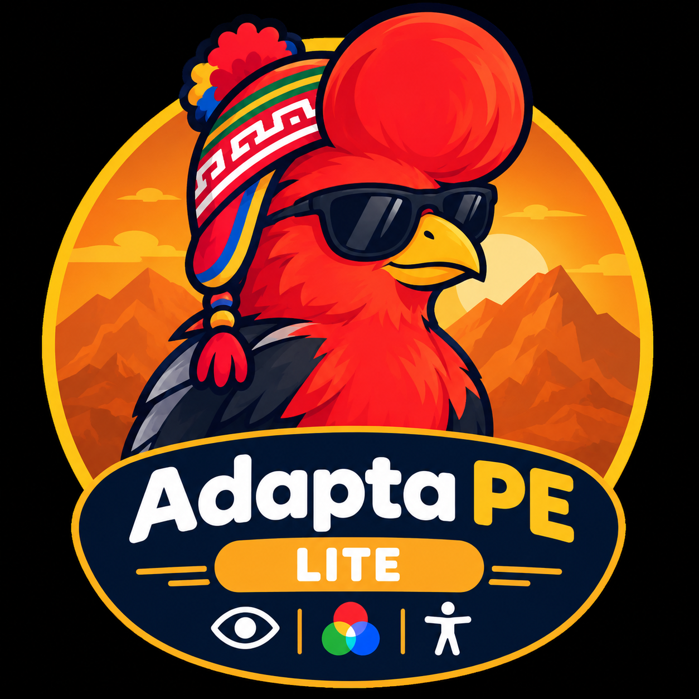

Adapta PE Lite
EDICIÓN HANDS-FREE REDUCIDA
🤖 Asistente de Voz Activo
Comandos:
Di "Computadora", espera el beep y dicta instrucciones.
👁️ Filtros Clínicos de Daltonismo
Normal (Sin Filtros)
Deuteranomalía (Verde Débil)
Protanomalía (Rojo Débil)
Deuteranopia (Sin Verde)
Protanopia (Sin Rojo)
Tritanomalía (Azul Débil)
Tritanopia (Sin Azul)
Acromatopsia (Escala de Grises)